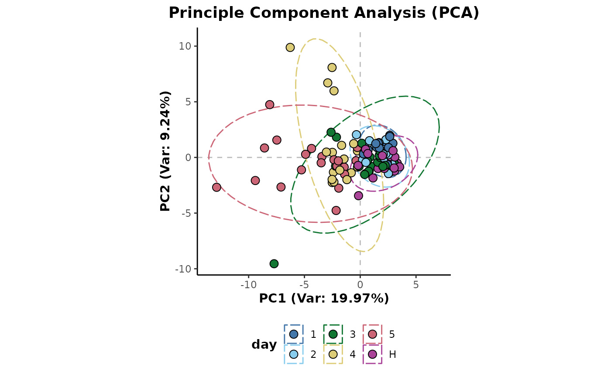
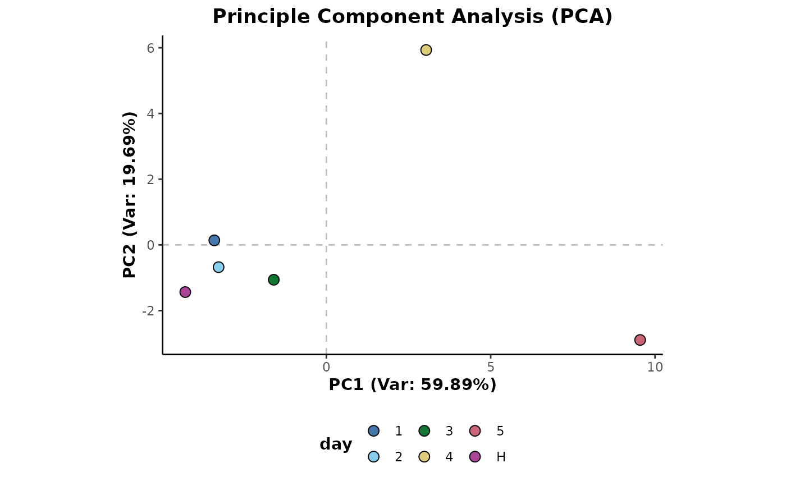
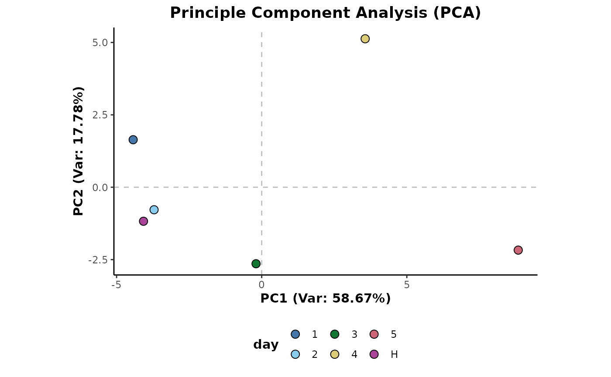

Aggregation of sample features based on a grouping variable.
aggregateMean(d, cls = "class")
# S4 method for AnalysisData
aggregateMean(d, cls = "class")
aggregateMedian(d, cls = "class")
# S4 method for AnalysisData
aggregateMedian(d, cls = "class")
aggregateSum(d, cls = "class")
# S4 method for AnalysisData
aggregateSum(d, cls = "class")S4 object of class AnalysisData
info column to use for class data
An S4 object of class AnalysisData containing the aggregated data.
Sample aggregation allows the electronic pooling of sample features based on a grouping variable. This is useful in situations such as the presence of technical replicates that can be aggregated to reduce the effects of pseudo replication.
aggregateMean: Aggregate sample features to the group mean.
aggregateMedian: Aggregate sample features to the group median.
aggregateSum: Aggregate sample features to the group total.
## Each of the following examples shows the application of the aggregation method and then
## a Principle Component Analysis is plotted to show it's effect on the data structure.
## Initial example data preparation
library(metaboData)
d <- analysisData(abr1$neg[,200:300],abr1$fact) %>%
occupancyMaximum(occupancy = 2/3)
d %>%
plotPCA(cls = 'day')

## Mean aggregation
d %>%
aggregateMean(cls = 'day') %>%
plotPCA(cls = 'day',ellipses = FALSE)
## Median aggregation
d %>%
aggregateMedian(cls = 'day') %>%
plotPCA(cls = 'day',ellipses = FALSE)

## Sum aggregation
d %>%
aggregateSum(cls = 'day') %>%
plotPCA(cls = 'day',ellipses = FALSE)
